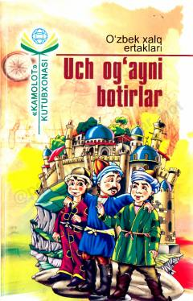

UOInsoniy fazilatlarni ulug'lovchi qiziqarli o'zbek xalq ertaklari to'plami.
Mazkur to'plamga bolalarni mardlikka, saxiy va bag'rikeng bo'lishga chorlovchi o'zbek xalq ertaklari kiritilgan. Kitob yosh avlod qalbiga ezgulik urug'larini sochish va insoniy fazilatlarni ulug'lash maqsadida nashr etilgan.